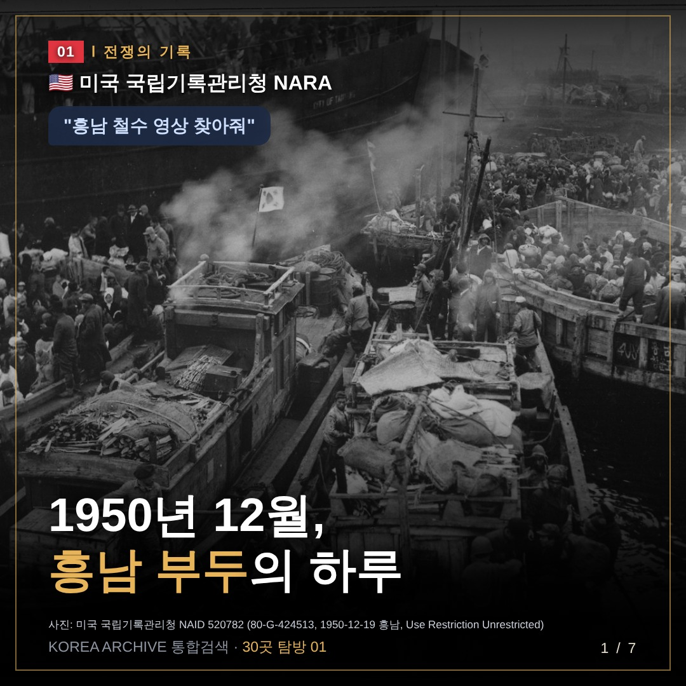
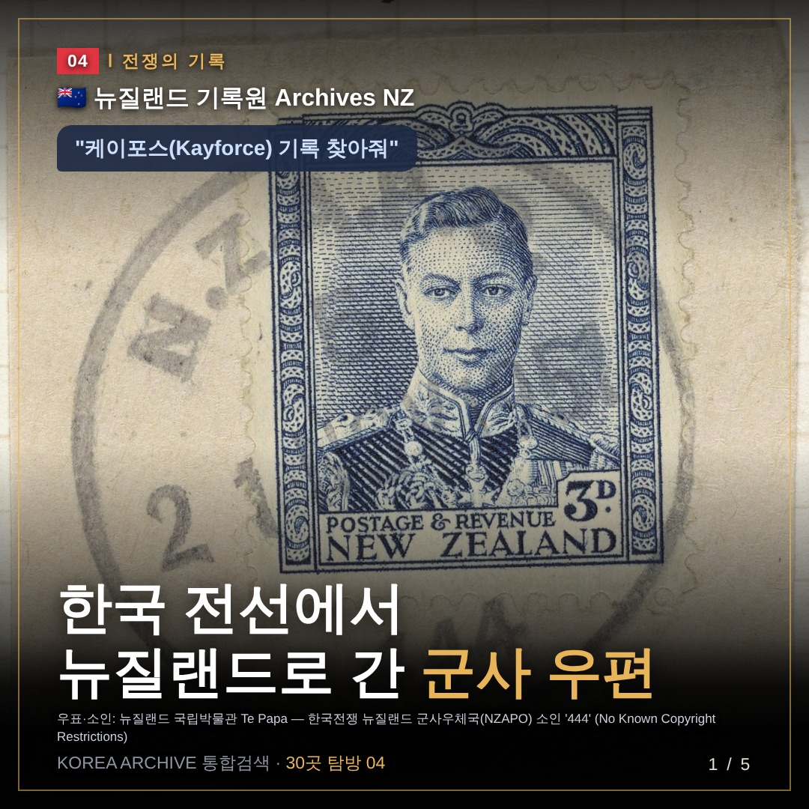
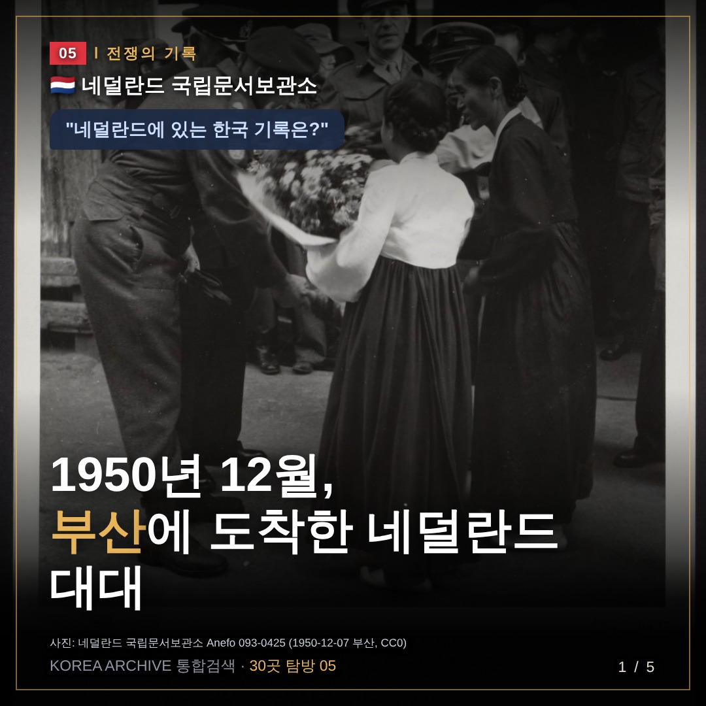
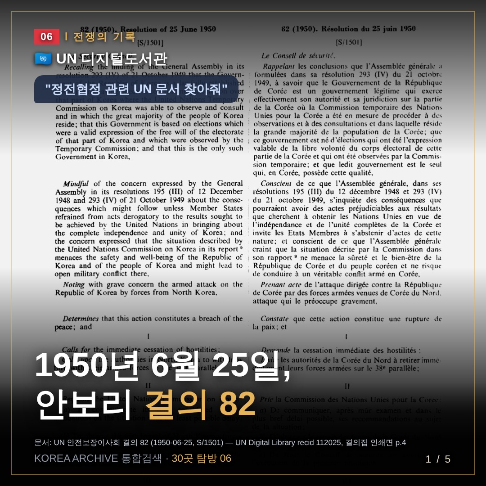
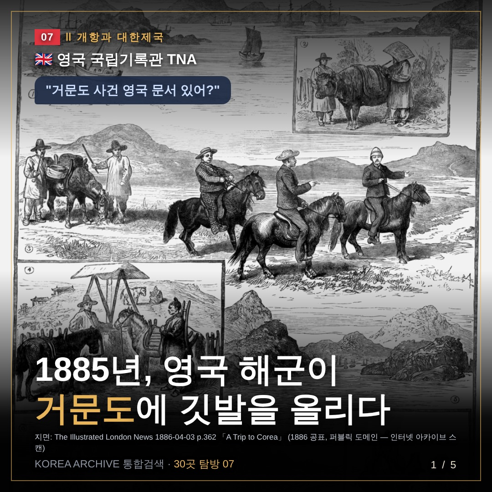
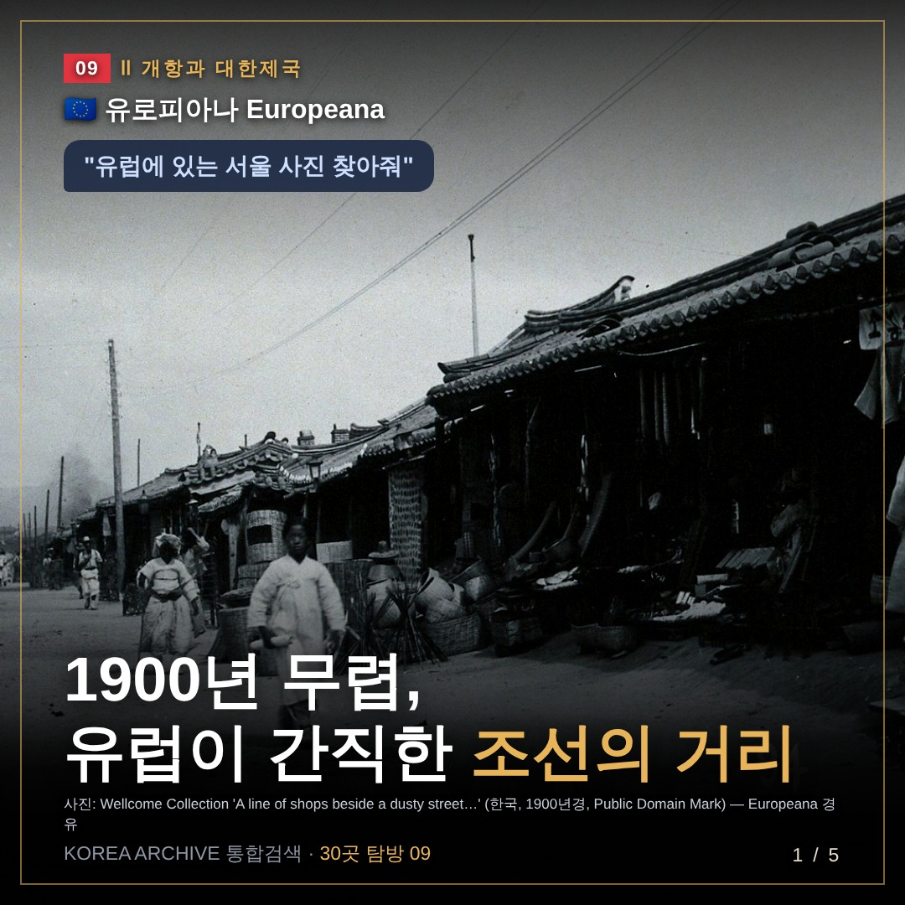
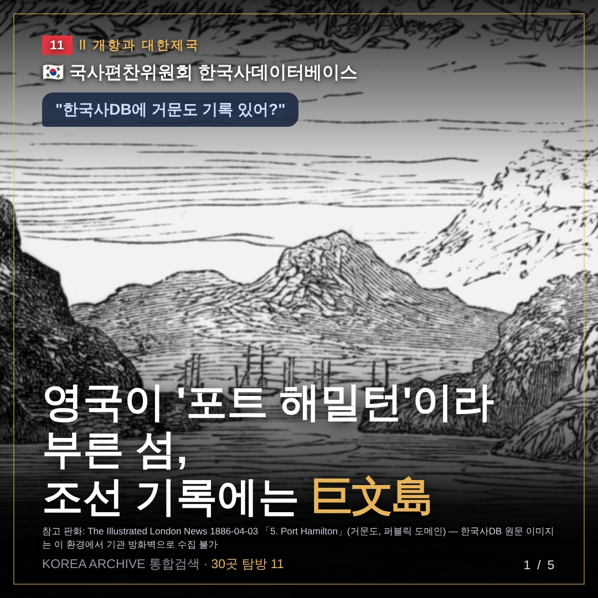
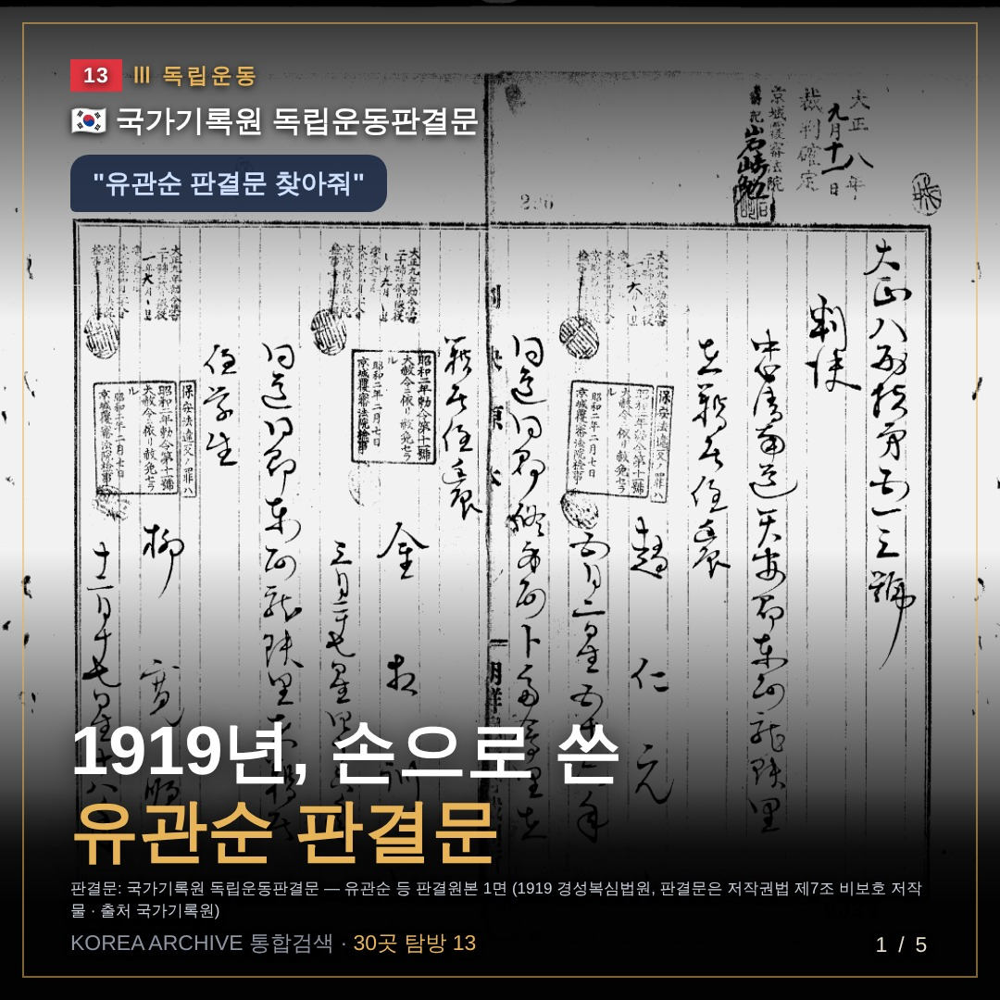
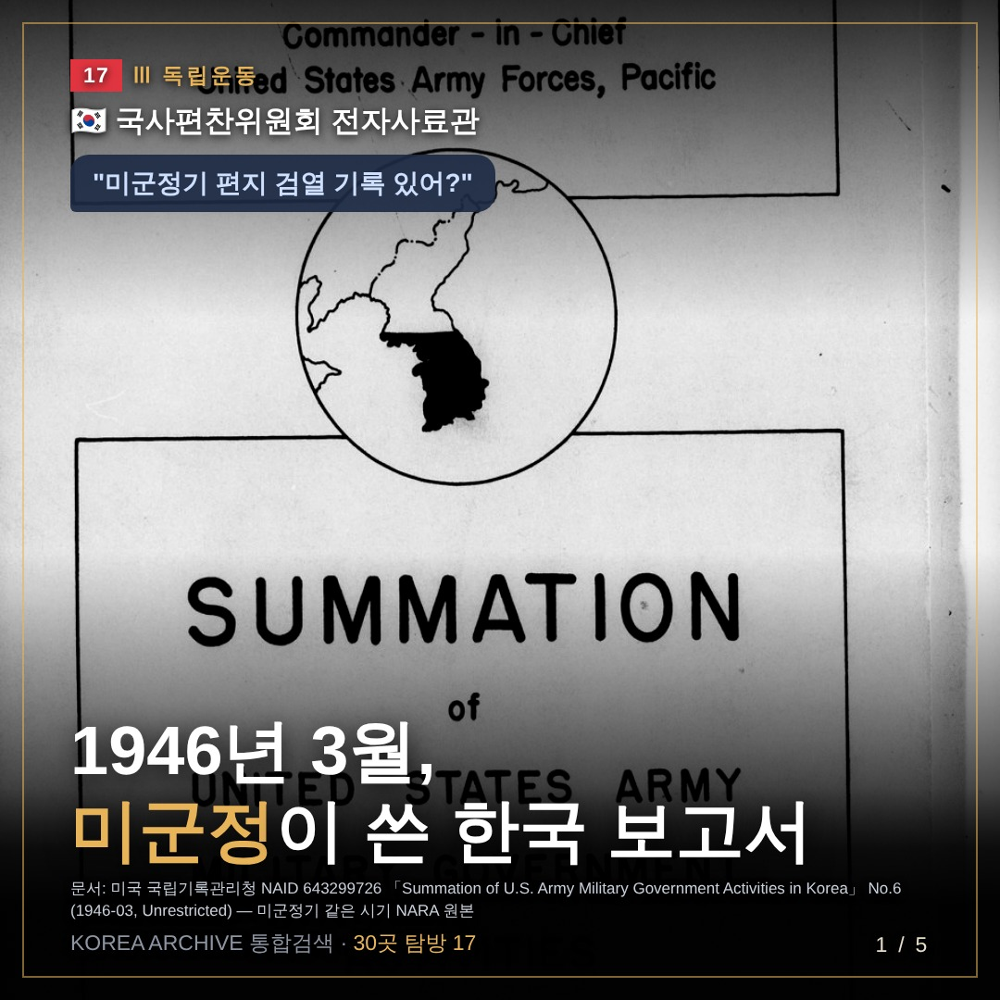

01 · 🇺🇸 미국 국립기록관리청 NARA
1950.12.24 흥남 — 필름 원본까지
흥남 철수 영상 찾아줘
- 계보RG 428 해군부 › 군사활동 영상 시리즈
- 생산1950-12-24
- 원본MP4 428-npc-170 (College Park 영상과)
- 권리Use Restriction 'Undetermined' → B
cross_search(sources=nara) → judge_rights(naid=75392)
이 도구가 함께 찾는 30곳을 한 곳씩 열어 봅니다. 곳마다 원본 이미지로 가득 찬 인스타그램 캐러셀(4~7장)과 소개글을 세트로 드립니다 — 원본 사진 한 장, 함께 찾은 원본 모음, 사진 속 글자를 짚어 읽는 해설 카드, 영상이 있으면 장면 해설까지. 각 예제는 그곳에 맞는 한 문장 질문과, 그 질문에 실제로 돌아온 기록입니다. 모든 결과는 2026-11-22 실제 도구 호출로 확인했습니다.
🇺🇸 🇰🇷 🇦🇺 🇳🇿 🇳🇱 🇺🇳 🇬🇧 🇫🇷 🇪🇺 🌐 🇯🇵
Ⅰ부






Ⅱ부







Ⅲ부





Ⅳ부

Ⅴ부


Ⅵ부


이 시리즈를 만들며 고친 것 — 막힌 곳은 빼지 않고 도구를 고쳤습니다.
08 Gallica: 서버 자동 조회가 403으로 막히면 같은 국립도서관의 BnF 공식 카탈로그로 넘어가 기록을 수집하고, 디지털화된 Gallica 원본 링크를 함께 돌려줍니다.
11 한국사DB: 연합검색이 늘 0건이던 문제 → 개방파일 색인이 없으면 한국사DB를 실시간 조회합니다. 비변사등록 巨文島 4건은 등록류 판독으로 확인했습니다.
28 정보공개: 정보공개포털 원문정보 메뉴가 2026-11-12부터 점검 중입니다. 도구가 점검 상태를 실측해 알리고, 점검 중에도 가능한 정보공개청구·대체 검색 경로를 안내합니다.
영상: 영상 기록의 장면 전환을 찾아 장면별 대표 프레임을 뽑는 기능을 만들었습니다(01·29 흥남 필름 장면 해설). 웹·모바일에서는 인터넷 아카이브의 시각 코드 프레임으로 같은 일을 합니다.
권리를 지킨 방식: 공공누리 제4유형은 자르거나 표시를 얹지 않고 원형 그대로, 기관 허가가 필요한 이미지(장서각·규장각·독립기념관 스크랩 등)는 싣지 않고 같은 기록의 공개 원본이나 참고 이미지를 쓰고 그렇다고 적었습니다. 기관 방화벽·봇 차단은 우회하지 않았습니다.